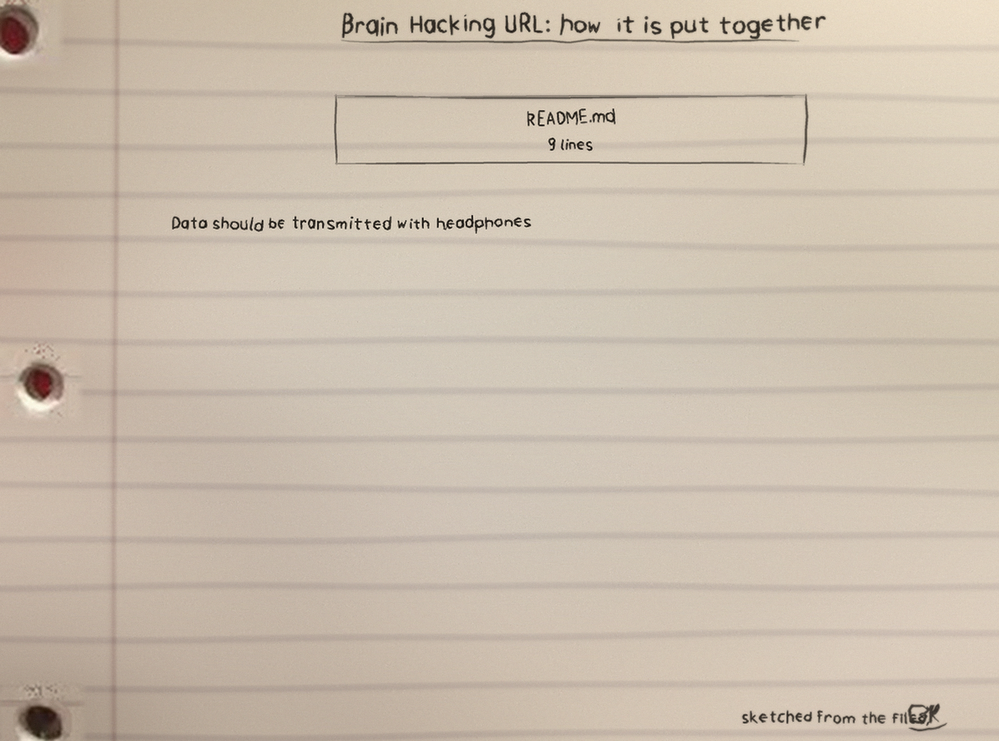
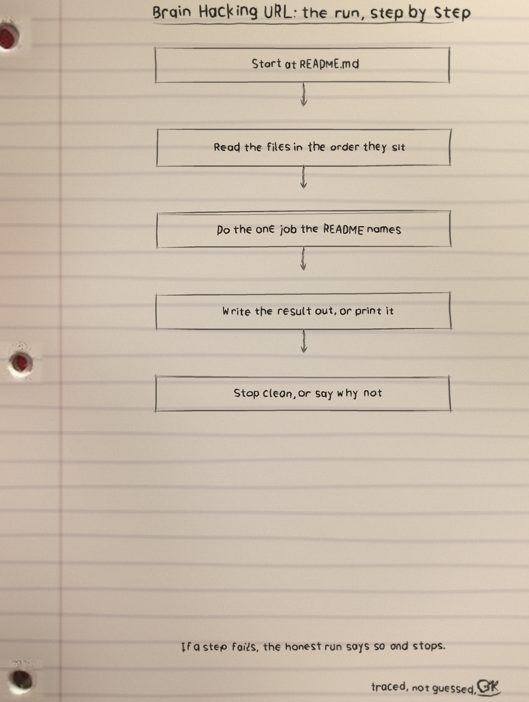
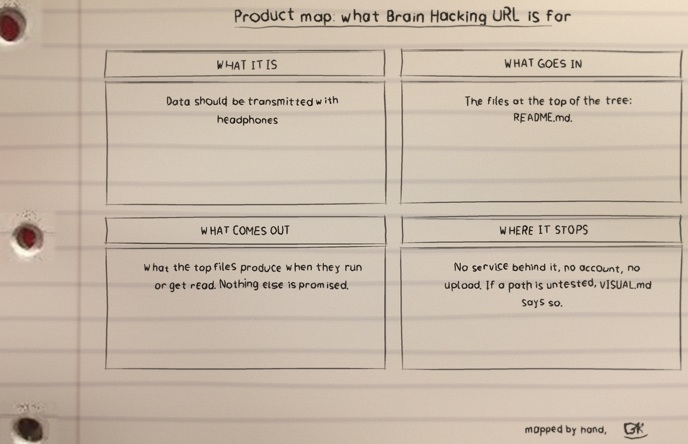

The local car
brainwave.py builds the same class of sound at home with no network, Python 3 and the standard library alone, writing a stereo WAV at 44100 Hz. Binaural sends a slightly different pure tone to each ear and the brain hears the difference as a beat, which is why headphones are not optional. Isochronic keeps one tone and gates it on and off at the beat rate, identical in both channels.
Run it: the dashboard strip
| Control | Setting |
|---|---|
| Mode | binaural or isochronic, default binaural |
| Base carrier | 220 Hz |
| Beat | 10 Hz |
| Duration | 60 seconds |
| Volume | 0.5 within 0.0 to 1.0 |
| Output | brainwave.wav unless o or output says otherwise |
python3 brainwave.py # 10 Hz alpha binaural, 60 s
python3 brainwave.py --beat 6 --duration 300 # theta session
python3 brainwave.py --mode isochronic --beat 18 # beta, isochronic
python3 brainwave.py --help # all optionsBand card
Delta 0.5 to 4 for sleep, theta 4 to 8 for meditation, alpha 8 to 13 for relaxed focus, beta 13 to 30 for alertness, gamma 30 and up for concentration. A beat of 0 is accepted as a plain unmodulated tone.
Instructor interventions
Three checks refuse a file that would have sounded wrong: a binaural beat wider than twice the base, which would push the left tone below 0 Hz; any tone past 22050 Hz, half the sample rate, which would fold down and play back as a lower note; and a duration under one frame, 1/44100 of a second, which once wrote a valid header over no audio at all.
Ordinary guards: base above 0, beat 0 or above, duration above 0, volume within (0, 1], every value finite, one error line to stderr, exit 1, no file written, and an unwritable path refused the same way. Fade in and fade out run up to 2 seconds each and are capped at half the file.
The audio was generated and measured as data, not listened to, and no entrainment effect is claimed. Tests: 19, all passing, run by python3 -m unittest.
Instructor margin note: the page still counts 1 file and 9 lines of Markdown, still quotes the README as its code excerpt, and still reports no test files, while the repository today runs brainwave.py with a 19 test suite. Lessons get corrected on the record, not quietly.
The code, as the site presents it
# BrainHacking-URL
URL that hacks the human mind
Data should be transmitted with headphones
```
https://mynoise.net/NoiseMachines/custom.php?l=6161310308172844496600&m=BINAURALPURE0~BINAURALPURE1~BINAURALPURE2~AURALSCAN4~AURALSCAN5~AURALSCAN6~AURALSCAN7~AURALSCAN8~ISOCHRONIC9~AURALSCAN9&orig=1&title=Custom%20Brainhacking%20Audio
```The files
Brain Hacking URL: 1 files, 9 counted lines across Markdown 9, in the snapshot this page was drawn from. The repo today also carries brainwave.py and its test suite, as the margin note records.
The sheets
The full set is the Brain-Hacking-URL-Visuals folder in the repo.


